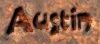
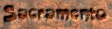

|
Welcome to the Austin City Guide. Austin is located in Central Texas and is the state capital. Austin is a green city, both visually and philosophically. Outdoor spaces are valued and the city offers a wide variety of scenic places, hike and bike trails and natural swimming holes.
Austin is known as the "Live Music Capital of the World" and this title is well earned. On any given night, you can attend live performances of almost any type of music, from a Javanese gamelan performance at the University of Texas to blues at Antone's to honky-tonk at the Broken Spoke. Austin has something for everyone.
With an Austin-Round Rock metropolitan population of 1.4 million people, Austin offers all the benefits of a major metropolitan area but retains a definite local flavor. Perhaps Austin is best captured with the unofficial "Keep Austin Weird" motto on bumperstickers on countless cars in town. Austin values eclecticism above all else and a host of independent restaurants and shops dot the city. In spite of the funky image, Austin also makes a great destination for history buffs, spa travelers or families.
The reviews for Austin were written by graduate students and young professionals who call Austin home. Try some of our search features below and plan a day in Austin!
|
Want to submit a review? Email the database manager at hitthewall55@yahoo.com Include your name, your hometown, an attraction and your review and comments.
|